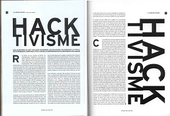

Electronic Distrubance Theater
Hackers
Ars Electronica

Reading 4
Internet Art – Chapter 3
I found the different facets of Ars Electronica interesting, especially the tension between the hacking and artist groups. It was clear that they both had different objectives, but because they were represented by the same group, the threats of the one group translated and affected the other pretty severely. I think the idea of tactical media is one of the founding principles of the internet and we see these ideals represented in today's world. The internet is a free place where anyone can find their voice. People are becoming the subjects rather than the objects of modernity. Everyone involved in this effort, no matter how they represent themselves can stand behind the common ideals of action and impact.